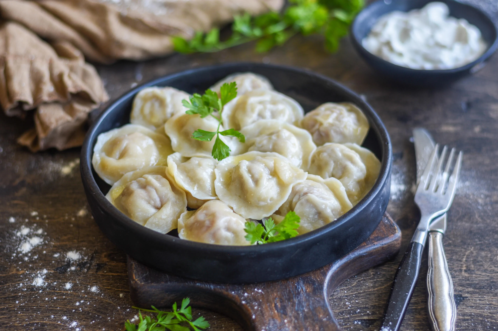

Pelmeni

Description
Pelmeni, originating from Russia, are savory dumplings that encapsulate the essence of comfort food. These small, doughy parcels are typically filled with a mixture of minced meat, such as beef, pork, or a combination, seasoned with salt and pepper. The dumplings are meticulously crafted, featuring thin, unleavened dough enveloping the flavorful filling.
Pelmeni are known for their distinctive shape—tiny, folded pockets resembling a twisted hat or ear—and are traditionally served boiled or sometimes pan-fried for a crisp texture. Often enjoyed with a dollop of sour cream or a drizzle of melted butter, pelmeni offer a satisfying combination of hearty flavors and a simple yet irresistible culinary experience that transcends generations and cultural borders.
Ingredients
For the Dough
- 2 cups all-purpose flour
- 2/3 cup water
- 1 egg
- 1/2 tsp salt
For the Filling:
- 1/2 lb ground beef
- 1/2 lb ground pork
- 1 small onion, finely chopped
- Salt and pepper to taste
Instructions
Prepare the Dough:
- In a large bowl, combine the flour and salt. Make a well in the centre and add the egg.
- Gradually add water, mixing continuously until a dough forms
- Knead the dough on a floured surface until smooth. Cover with a damp cloth and let it rest for about 30 minutes
Make the Filling:
- In a mixing bowl, combine the ground beef, ground pork, chopped onion, salt, and pepper. Mix until well combined
Assemble the Pelmeni:
- Roll out the dough on a floured surface until it's about 1/16 inch thick.
- Use a round cookie cutter or a glass to cut out circles from the dough
- Place a small amount of filling in the centre of each dough circle
- Fold the dough over the filling to form a half-moon shape, then pinch the edges to seal, creating a hat-like or ear-like shape.
Cook the Pelmeni:
- Bring a large pot of salted water to a boil
- Carefully drop the pelmeni into the boiling water and cook until they float to the surface (usually 3-5 minutes)
- Remove the pelmeni with a slotted spoon and serve hot.
Serve:
- Pelmeni can be served with a side of sour cream, melted butter, or a sprinkle of fresh herbs